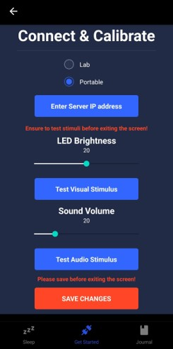
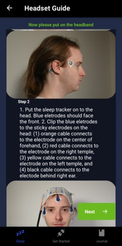

Authors: Po-Yao (Cosmos) Wang, Xiao Zoe Fang, Gabriel Ducos, Nathaniel Yung Xiang Lee, Antony Smith Loose, Rohit Rajesh, Nethmini Botheju, Eric Yang Chen, Maria Fernanda Montoya, Alexandra Kitson, Karen Konkoly, Rohan Sagi, Nathan W. Whitmore, Rakesh Patibanda, Mahdad Jafarzadeh Esfahani, Jialin Deng, Jiajun Bu, Martin Dresler, Don Samitha Elvitigala, Nathan Semertzidis, Florian ‘Floyd’ Mueller
Time: Mar. 2023 - Jul. 2025
Category: Research
Lucid dreaming is a unique state of consciousness where one is aware of dreaming whilst asleep,
which enables people to control their dream content.
Lucid dreaming offers various mental and physical health benefits, such as entertainment, inspiration, and alleviating nightmares.
However, lucid dreaming rarely occurs naturally, and lucid dream induction techniques take effort and time to practice.
We designed LuciEntry, a lucid dream induction system. (
Github )
LuciEntry is a portable, modular, automatic prototype designed to facilitate lucid dream induction which comprises four core components:
(1) a sleep-tracking cap, (2) a server for sleep stage classification, (3) cue modules for triggering induction stimuli, and (4) a smartphone application to guide the user.
The sleep tracker monitors the user’s brain and eye activity for sleep stage detection.
Once the dream state is detected, the system automatically activates the cue modules to deliver external stimuli, such as auditory and visual cues, to increase the user’s self-awareness and induce lucid dreaming.


Our mobile app guides users through the preparation before sleep, priming them to a lucid state.
Acknowledgments
We thank Mr. Aleksandar Joseski for the video. Florian ’Floyd’
Mueller acknowledges the support from the Australian Research
Council, especially DP190102068, DP200102612 and LP210200656.
We thank Ria Gulshan and Matthew Doyle for proofreading the
paper. We also thank the Exertion Games Lab for the feedback and
conceptual support they contributed toward the project and the
paper.